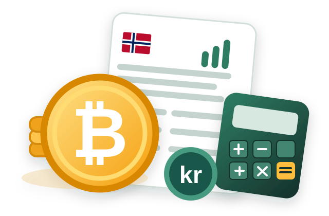
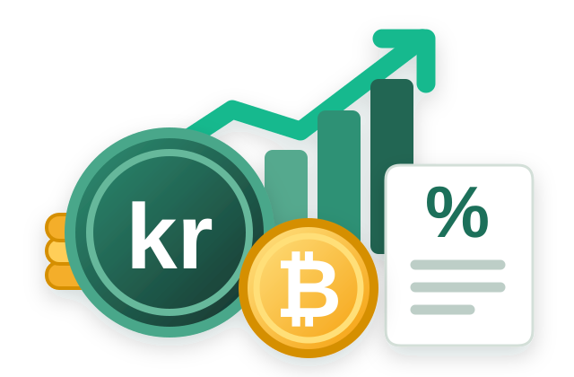

CARF og kryptoskatt 2026–2027: Hva betyr de nye reglene for deg?
Fra 1. januar 2026 gjelder nye rapporteringsregler for kryptoeiendeler. Hva betyr CARF for deg som handler eller eier kryptovaluta?
Kort fortalt
- CARF gjør at rapporteringspliktige kryptotjenestetilbydere må samle inn og rapportere opplysninger om brukere og aktivitet.
- Første rapporteringsfrist er 10. februar 2027, for opplysninger om 2026.
- Opplysninger kan utveksles mellom skattemyndigheter i land som deltar i ordningen.
- Du har fortsatt selv ansvar for riktig gevinst, tap, inntekt og formue i skattemeldingen.
- Ikke regn med at alle kryptotransaksjoner blir automatisk forhåndsutfylt.

Hva er CARF?
CARF står for Crypto-Asset Reporting Framework. Det er en internasjonal standard fra OECD som skal gi skattemyndighetene bedre informasjon om kryptoeiendeler og transaksjoner, også på tvers av landegrenser.
Reglene omfatter rapporteringspliktige tilbydere av relevante kryptotjenester. Rapporteringen kan blant annet gjelde veksling mellom krypto og vanlige penger, bytte mellom kryptoeiendeler, visse overføringer og opplysninger om beholdninger. Hvilke opplysninger som rapporteres, avhenger av regelverket og tjenesten.
10. februar 2027 er fristen for tilbyderne til å rapportere for 2026. Det er ikke en ny frist for din personlige skattemelding.
Blir kryptoskatten automatisk beregnet?
Nei, det bør du ikke ta for gitt. At Skatteetaten mottar opplysninger om aktivitet, betyr ikke nødvendigvis at den har hele historikken som trengs for å beregne riktig skattegrunnlag.
Du kan for eksempel ha kjøpt krypto på én børs, flyttet den til egen lommebok og senere solgt den et annet sted. Da er riktig inngangsverdi og sammenhengen mellom transaksjonene viktig.
Skatteetatens CARF-rettledning beskriver at den særskilte rapporteringen som er ment for forhåndsutfylling, i oppstartsperioden er begrenset til formuesverdier. Utvidelse til blant annet gevinst og tap krever videre regelverksarbeid.

Skattereglene gjelder fortsatt
CARF er et rapporteringsregelverk. Det erstatter ikke reglene for hvordan kryptovaluta beskattes i Norge. Som privatperson må du fortsatt oppgi skattepliktige gevinster og inntekter, fradragsberettigede tap og relevante formuesverdier.
Gevinst ved salg eller bytte av kryptovaluta er normalt skattepliktig som kapitalinntekt. Skattesatsen er normalt 22 prosent.
Eksempel: Du kjøper Bitcoin for 20 000 kroner og bytter senere hele beholdningen mot Ethereum når den er verdt 30 000 kroner. Da har du normalt realisert en gevinst på 10 000 kroner, selv om du ikke har tatt ut penger til bankkontoen. Ved 22 prosent blir det 2 200 kroner i skatt, dersom vi ser bort fra gebyrer og andre forhold.
Staking, mining og DeFi kan også ha skattemessige konsekvenser. Behandlingen avhenger av hva du faktisk har gjort.
Ta vare på transaksjonshistorikken
Selv om rapporteringen blir mer omfattende, er det viktig å kunne dokumentere tallene dine. En overføring mellom lommebøker du selv eier, er normalt ikke et salg, men du bør kunne vise hvor midlene kommer fra.
- Eksporter handelshistorikk fra børsene du bruker – også før du slutter å bruke dem.
- Kontroller overføringer mellom egne børser og lommebøker.
- Dokumenter kjøpspriser, salg, bytter, gebyrer og eventuelle kryptoinntekter.
- Ha oversikt over beholdning og verdi ved årsskiftet.
Hva bør du gjøre nå?
Det viktigste er å ha kontroll på egen historikk, ikke å vente på at CARF skal gjøre skattemeldingen ferdig for deg. Med mange handler, børser og lommebøker kan en kryptoskattekalkulator hjelpe deg å organisere grunnlaget.
Kryptokompis samler data fra støttede børser og importfiler, beregner blant annet kostpris, gevinst, tap og formue etter norske regler og lager rapporter som dokumentasjon.
Kilder og videre lesning
- Skatteetaten: Kryptoeiendeler (CARF)
- Skatteetaten: Om CARF-ordningen
- Skatteetaten: Rettledning for CARF
- Skatteetaten: Salg av virtuelle eiendeler
Artikkelen gir generell informasjon, ikke individuell skatterådgivning. Du er selv ansvarlig for opplysningene i skattemeldingen.